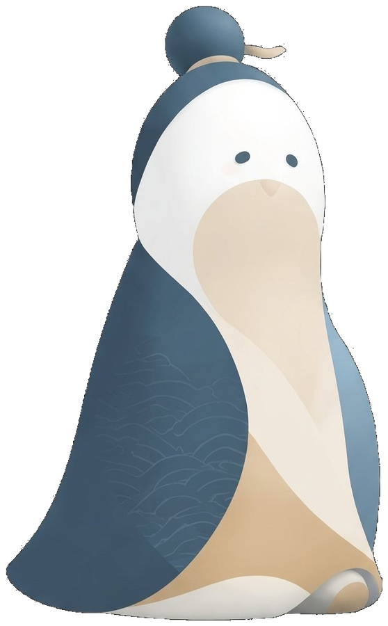

跟著孔小聖出發，走過仁義禮智信，走讀府城百年歷史。三週主題活動，空腹子市集，繞境古蹟大典。

活動時程
仁義 一週 · 禮智 一週 · 信 一週，整月市集、繞境、蒐集全開放
繞境地圖
從孔廟出發，約 3 小時、3.9 公里回到孔廟。行進沿途，行動劇場在各點位依序上演。點選地圖標記或右側列表查看各幕劇場介紹。
社會共創
有孔繞繞不只是一場策展人的設計，更是一個需要在地聲音共同完成的社會設計計畫。從現在起到 2027 年 3 月，我們有三種方式需要你的加入。
行動劇場五幕的演員、說書人，以及繞境沿線的導覽解說員。我們優先邀請台南在地居民、文史工作者、戲劇科系學生，以及熟悉本地歷史的耆老。
在活動正式籌備前，我們將舉辦三場「在地聲音工作坊」，分別邀請孔廟禮生與文史學者、南門路周邊居民、以及周邊古蹟管理單位，確保「有孔繞繞」是從在地長出來的計畫，而不是外來策展的強加。
「有孔繞繞」涉及孔廟廣場、府前路、南門路等公共空間的臨時使用，以及多個國定古蹟場域的配合。我們主動舉辦公開說明會，向中西區居民、周邊商家與文資委員說明計畫內容、空間使用原則，並收集意見。
空腹子市集
邀請孔廟周邊在地老店、文化連結深厚品牌與文創工作者共同參與，讓市集成為走讀台南的延伸場域。
市集不只是攤位的集合。空腹子市集規劃「六藝體驗區」，將《周禮》六藝——禮、樂、射、御、書、數——轉譯為六組可以親身參與的當代體驗攤位，讓每個人在逛市集的同時，不知不覺走入儒家的生活哲學。
我們邀請在地連結深厚、理念相符的店家與創作者一同參與。優先收件以下類型：
市集範圍：孔廟廣場 / 南門路二段周邊 / 府前路沿線
地域優先原則適用
虛擬蒐集遊戲
整個三月，走訪各古蹟點位解鎖對應主題款孔小聖，為你的孔小聖搭配專屬配件。3/14 孔怕愛上你，情人限定款只在市集現場蒐集。
春分清晨祭孔大典，午後繞境府城古蹟，行動劇場在路徑沿線依序甦醒。帶著孔小聖，走過仁義禮智信。